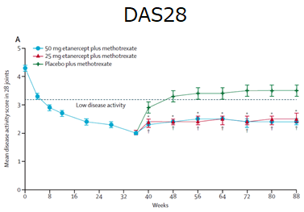
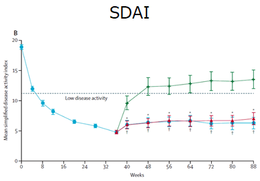
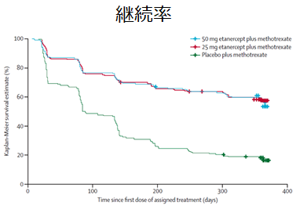

ETN50㎎⇒ETN25㎎に減量した場合でも、関節破壊進展抑制効果は十分ではない可能性がある（PRESERVE Study）
- ●平均罹病期間6.4-7.3年のMTX-IR症例756例に対し、オープンラベル期間はMTX + ETN 50mg,を36週投与し、その後3群（ETN50＋MTX群、ETN25+MTX群、PBO+MTX群）にランダム化し52週観察
- ●主要評価項目は88週時のDAS28 low disease activityの割合
- ●36週から88週までのmTSSの変化量（PBO+MTX群の変化量0.60と比較した場合）
- －ETN50㎎+MTX群 -0.06 p=0.0259 PBOに比べ有意に低下
- －ETN25㎎+MTX群 0.05 p=0.070 PBOと有意差なし



ETN50㎎+MTX群、ETN25㎎+MTX群も同様に低疾患活動性を維持している。しかし、、、
ETN50㎎⇒ETN25㎎に減量という使い方も、関節破壊進展抑制の面から考えると好ましくない
JS Smolen et al, Lancet 2013, 381: 918–29